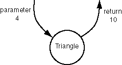

Dynamic View of Recursion
Sometimes thinking about the definition and translating it into Java is
all you need to do. But sometimes you need to think about what happens
when the program runs.
In this dynamic view you think about the sequence of events as the method
is actually executing.
Here is a statement from main():
int result = tri.Triangle( 4 );
When a statement like this executes the method
Triangle() is said to be activated
with an argument of 4.
It does some computation and returns a result, 10.
Let us picture this as:

QUESTION 11:

Examine the code. Say that Triangle()
has been activated with a parameter of 4.
The if statement causes the false branch
to execute.
What happens next?
int Triangle( int N )
{
if ( N == 1 )
return 1;
else
return N + Triangle( N-1 );
}